Chapter 5
Passive radar detection of drones with staring illuminators of opportunity
Passive Bistatic Radars (PBRs) use non-cooperative illuminators of opportunity to detect, localise and track targets. They have attracted considerable research interest in recent years because they can be operated and deployed at a relatively low cost, are difficult to detect and hence allow covert operations in hostile environments and do not require the allocation of an increasingly more congested frequency spectrum. Various analogue and digital communication systems (such as television (TV) and radio broadcast systems) have been studied and exploited as illuminators of opportunity. However, despite the extensive work carried out on PBRs that exploit random communication signals, there has been limited research investigating the use of existing non-cooperative radar systems as illuminators of opportunity. The exploitation of radar signals to achieve passive bistatic detection is attracting attention as it may offer significant advantages. Because common radar waveforms are deterministic, a reference channel is essentially not required to detect a target. Prior intelligence or live estimations of the deterministic waveform design parameters allow the passive receiver to be matched with the illuminator of opportunity and thus generate a range–Doppler map. Radar signals are also designed for detection and provide Doppler tolerance, large bandwidths (which provide good range resolutions) and good compression ratios.
This chapter presents a PBR solution that exploits non-random signals transmitted by a non-cooperative staring radar system to detect drones. Staring radars offer a constant illumination of the volume under surveillance and, unlike radar systems that deploy a rotating antenna, offers a continuous signal of opportunity. They are very attractive illuminators in particular for short-range applications to detect low Radar Cross Section (RCS) and slow moving targets.
5.1 Introduction
PBRs can detect, localise and track targets passively by processing signals of opportunity transmitted by non-cooperative sources of illumination. They are also often referred to as passive coherent location radars, passive covert radars, non-cooperative radars and opportunistic radars [1].
In recent years, PBRs have attracted significant interest among the radar community due to some attractive characteristics that offer key operational advantages. Because PBRs are completely passive, a dedicated transmitter is not required and, as a result, they are smaller and relatively lower cost than active radars as well as easy to install and operate. Because they operate silently, PBRs are covert and difficult to detect and localise in hostile environments [1]. In addition to all these, PBRs exploit signals already available in the environment and do not require the allocation of a dedicated portion of the frequency spectrum which is becoming increasingly congested [2].
The general shifting of illuminators of opportunity from analogue to digital, together with larger available processing power at the receiver, has brought greater bandwidth, better range resolution and significant performance improvement. Typical sources of non-cooperative illumination include signals from broadcast systems (including TV and radio signal), cellular base stations and local area networks. The choice of different types of illuminators is driven by their strengths and weaknesses for each specific application. These include the signal parameters, the experimental configuration and power budget characteristics [3].
Although PBRs have matured rapidly in the past few years, they are continuing to attract significant research interest. Ongoing research efforts are, for example, looking at improving passive receiver systems and processing techniques and at identifying optimal deployment and configuration solutions that exploit a wider range of transmitters of opportunity with better waveform properties [4]. Despite all these efforts, to date, there has still been very little work to develop PBRs that exploit existing non-cooperative radar systems of opportunity.
The exploitation of radar signals rather than communication signals to achieve passive bistatic detection is attractive as it may offer significant advantages that are worth investigating. Because common radar waveforms are deterministic, the bistatic configuration does not essentially require a reference channel to detect a target, as is required when non-deterministic communications signals are used. The “knowledge” of the deterministic waveform allows the passive receiver to be matched with the illuminator of opportunity and thus to generate a range–Doppler map. Radar signals are often characterised by large bandwidth and a good compression ratio and hence they provide enhanced detection and range resolution. Despite these advantages, using radar platforms as illuminators of opportunity also introduces some technical challenges, especially when the transmitter is non-stationary. Airborne illuminators, for example, are continuously moving and can provide coverage only for a limited amount of time. PBRs need to rely on some prior knowledge of the presence of the signal and, if the platform is moving, there will be Doppler effects induced by the platform dynamics that have to be taken into account.
To date, research attempting to use radar signals for PBRs has been mostly based on the exploitation of Synthetic Aperture Radar (SAR) systems with the use of a reference channel. In the literature, there have been few studies of PBRs that do not use a reference channel but the vast majority of these exploit random signals of opportunity, such as Digital Video Broadcasting-Terrestrial (DVB-T) [5] and Digital Television (DTV) [6] signals.
The Thales-Aveillant ground based staring array radar technology can be used for Air Traffic Control (ATC), including the monitoring of drones. The radar, with a wide beam transmitter antenna, offers a constant illumination of the entire volume under surveillance. Unlike classic ATC radar systems that deploy a rotating antenna, the Thales-Aveillant Gamekeeper provides continuous target illumination and offers a constant signal of opportunity. This makes it a very attractive illuminator, in particular for short-range applications detecting low-RCS and slow-moving targets, such as drones.
Drones are small targets that have increasingly become a significant danger to manned air traffic and pose a security [7] and privacy threat. Passive solutions to detect and track drones represent a very attractive option, especially in the vicinity of airports, where the risk of interfering with other existing radar and communication systems is high. A passive receiver network sited in the vicinity of staring array radar technology provides continuously available signals of opportunity and can support long integration times to provide fine Doppler resolution for detection, tracking and classification of small targets.
This chapter investigates and demonstrates the feasibility of PBR target detection exploiting non-random radar signals of opportunity transmitted by existing non-cooperative staring radar illuminators. A passive radar prototype was developed and performance investigated on data collected in a set of short-range experimental trials with the Thales-Aveillant Gamekeeper radar. Results show drones can be successfully detected with and without the use of the reference channel at the receiver.
5.2 Overview of a passive bistatic radar
A comprehensive reference on a bistatic radar and its applications is available in [8,9]. In this section, some examples of the main applications are reviewed to emphasise the limited work available on PBR that exploit radar signals.
5.2.1 PBR exploiting analogue signals
PBR systems using an analogue terrestrial TV as an illuminator of opportunity were investigated by Griffiths and Long [10] in 1986. A Phase Alternating Line TV signal, carrying the colour-encoding system for analogue TV signals, was exploited, which found the presence of high sidelobes, strong ambiguities and dynamic range limitations [10]. Similar results were corroborated by Ringer et al. [11] who showed that the echo received from a single target was composed of a number of multiple returns. It was shown that using TV signals as an illuminator of opportunity introduced high clutter returns which, however, could be controlled by the use of large bandwidth to integration time products. The work on PBR with TV signals was continued by Howland in [12] to demonstrate that such systems could provide a target detection and tracking of aircraft experimentally. Target tracks were estimated from the measurements of the target Doppler shift and angle to successfully show that aircraft detection and tracking could be achieved, despite limitations in measurement accuracies, at ranges up to 260 km.
In 1997, Sahr and Lind [13] investigated commercial FM broadcasts to measure ionospheric turbulence. The advantage of FM transmitters is that they cover the wider 88–108-MHz frequency range and transmit relatively high power. FM signals containing speech and music were investigated to show that the FM signal properties resulted in better range resolution and Doppler shifts. The ambiguity function (AF) of FM radio signals was investigated in [14]. This study showed that the range and Doppler resolution is a function of the type of content of the FM signal. Signals that presented a high spectral content, such as rock music, provided better performance than those with a lower spectral content, such as speech, especially within pauses between words. A further analysis of performance predictions for FM radio signals was presented in [15]. This study investigated performance for a PBR exploiting two FM transmitters transmitting different powers and showed that the detection range could be improved (to over 30 km) when the two transmitters were exploited together. High transmit power and wide coverage made FM radio signals suitable for long-range detection. One of the problems of PBR is that the receiver needs to detect low-power target echoes in the presence of a continuous signal from the illuminator of opportunity. Because most broadcast transmitters are continuous, PBR does not have the privilege of a pulsed transmission and thus no periods of silence exist in which to listen for echoes. This is called Direct Signal Interference (DSI). An example of DSI mitigation for FM signals was studied in [16] and the limiting effects of DSI at the receiver were investigated in [17].
Range resolution performance of PBR exploiting multiple FM channels from the same co-located transmitter was analysed in [18]. It was theoretically shown that the range resolution could be improved from 6–7 to 1 km. A multi-frequency approach for FM PBR was also investigated by Bongioanni et al. who exploited high-frequency (HF) diversity of FM radio signals [19]. An alternative method to improve range resolution by exploiting multiple adjoining channels coming from a single transmitter was presented in [20]. The study focused on the matched filter improvement for better range resolution via correlation accounting for differences in Doppler shifts amongst channels and channel synchronisation.
A recent study in FM radio signals investigated the collection of the reference signal using beamforming [21]. Beamforming was also used to perform target angle estimation.
5.2.2 PBR exploiting digital signals
PBRs exploiting digital transmissions of opportunity have attracted significant interest, due to the increased available bandwidth offered by digital signals of opportunity, and recent efforts are leading to better range resolution and AF characteristics.
Global System for Mobile (GSM) communication is one of the digital signals of opportunity that have been used in PBRs. The performance of PBRs using the transmissions of a mobile phone base station, operating at 1,800 MHz with a bandwidth of 55 kHz, was investigated in [15]. A prototype PBR exploiting GSM signals was developed in [22] to demonstrate a successful detection of ground moving targets. The use of adaptive digital beamforming algorithms and a compact antenna array was also proposed to reduce direct path signal interference. A method to estimate the GSM reference signal from the direction of arrival using a two-element antenna array was proposed in [23]. The optimum beamforming was employed to extract the reference signal and to attenuate DSI. Results showed that a high speed train with a velocity of 150 km/h could be successfully detected. In [24], the GSM-Railway radio communication infrastructure was exploited to monitor trains and estimate their positions and velocities. A fast-moving train and a slow moving train were successfully detected. Passive bistatic Forward Scattering Radar (FSR) geometries have also attracted interest [25] and the use of GSM as an illuminator of opportunity in an FSR geometry was shown in [26].
Another mobile network that has been exploited for PBR is the Long-Term Evolution (LTE) network which provides high-speed wireless communication and data for mobile devices. An experimental study on PBR with LTE was carried out in [27] to detect a moving car with a minimum range resolution of 15 m and a minimum velocity resolution of 0.284 m/s. Further studies within LTE have shown the capability of LTE-based passive radars to detect ground moving targets, including cars, motorbikes and humans [28,29]. LTE-based passive radars were also investigated for air traffic surveillance [30]. A very recent study has also investigated 5G signals for PBR applications [31].
In 2006, BAE Systems developed a wideband PBR to demonstrate the use of DAB and DVB-T signals [32]. A further study implementing a more advanced testbed with analogue cancellations was implemented in [33] to show a civil passenger aircraft could be detected at a bistatic range of over 80 km using cross ambiguity processing. Palmer et al. studied DVB-T to detect automotive and airborne targets at various ranges [34]. Five targets from automotive traffic were detected with velocities ranging from 30 to 60 km/h at ranges of 200–1,050 m. In 2014, the use of DVB-T was further explored for maritime surveillance capabilities by Langellotti et al. [35]. This study investigated the detection and localisation of vessels beyond territorial waters and showed that target ranges of 20–100 km could be successfully achieved.
DVB-T signals present undesired peaks in the AF which are generated by guard intervals and pilot subcarriers. This limitation means that there are some restrictions to target detection. Most of the techniques used to enhance the AF of DVB-T are based on modifying the reference signal before it is cross-correlated with the echo signal. Undesired peaks reduction, for example, was investigated in [36,37]. In 2012, Colone et al. [38] proposed a technique to further overcome these limitations by cascading the linear filters responsible for power equalisation and the pilot carriers.
Wireless networking transmissions are another potential source to enable PBRs. The most common WiFi standards used in previous research are the IEEE 802.11a, 802.11b and 802.11g operating in the 2.4 and 5-GHz spectrum bands. The detection performance of a PBR exploiting IEEE 802.11 beacon transmissions, against two moving human targets separated by of 12 and 35 m, was studied by Guo et al. in [39]. A feasibility study to demonstrate stand-off through-the-wall detection using WiFi signals was presented in [40]. Results showed that a moving person behind a wall with a multilayer structure could be detected. PBRs based on WiFi were further investigated by Falcone et al. in [41] to detect targets in outdoor environments. A moving vehicle was detected at a range of 95 m and a human target was detected at a range of 85 m. In [42], WiFi signals were used to detect signs of life from breathing with PBR and another recent study investigated the use of WiFi in passive FSR [43].
With the development of space systems and the increased availability of transmitting satellites, space-based illuminators of opportunity have also attracted the interest of the PBR community. Satellites have been exploited that reside in Geostationary Orbits (GEO), Medium Earth Orbits and Low Earth Orbits (LEO). In 1992, Griffiths et al. investigated broadcast signals by TV GEO satellites as an illuminator of opportunity [44]. In 1993, Tsui and Shaw investigated a method to determine the distance of a target utilising four Global Positioning System (GPS) satellites [45]. They first measured the angle of arrival of echoes from the target so that the distance between the target and the receiver could be calculated. In 1995, Koch and Westphal further studied the application of Global Navigation Satellite Systems in PBR for the detection of airborne targets [46]. The US NAVSTAR-GPS and the Russian GLONASS systems were used to form a passive multistatic space-borne radar that exploited 48 satellites transmitting at L-band (1–2 GHz) to successfully detect military and civil aircraft. However, because these satellites are not designed for remote sensing applications, there was a drawback in terms of resolution capability [47]. This was also investigated by Glennon et al. [48] where it was shown that performance was limited by the limited transmitted power level of the GPS signals (about 25–30 W). The study of communication satellites for PBR was expanded with the launch of Iridium, a satellite system which resides in an LEO orbit. The Iridium satellites were used to detect an air target at a distance of 30 km from a passive receiver on the ground [49]. It was observed that a challenge of exploiting satellite on LEO orbits is the relative motion of the satellite with respect to the ground. GPS signals have been used to detect an airplane in forward scatter geometry in [50].
Solutions exploiting both analogue and digital illuminators have also been investigated. In [51], for example, a prototype was developed to show that ground and aerial targets could successfully be detected and tracked by combining FM, DAB and DVB-T. In [52], a hybrid passive radar sensor was proposed to deliver air guidance and surveillance in three dimensions under the ARGUS 3D project. The project aim was to improve ATC radar for civilian applications and showed that the exploitation of FM radio, DVB-T and DAB signals could offer high target position performance and good range estimates.
5.2.3 PBR exploiting radar signals
To date, studies exploiting radar systems as illuminators of opportunity have been limited to space-borne SAR and over the horizon radar transmitters [53]. SAR satellites mainly transmit chirp signals with wide bandwidth and hence offer very good range resolution. There are some drawbacks in using SAR satellites in LEOs. First of all, the transmitter needs to be tracked so that the passive receiver is always pointing towards the transmitter to collect the reference signal. Furthermore, such satellites do not have a fixed geographical coverage and move with a high velocity. This motion results in displacements or shifts in target detection [54].
A study on commercial-based SAR by Griffiths et al. in 2002 investigated SAR illuminators using a satellite in an LEO orbit [53]. The Envisat satellite was selected, carrying the Advanced ASAR operating at C-band with a carrier frequency of 5.331 GHz. SAR transmissions were exploited to detect air targets. That study only involved theoretical analysis, introducing the concept of implementation but no experiments were carried out.
In 2003, the work was continued for moving target detection by Whitewood et al. [55]. A stationary ground based receiver was employed to receive the echo from a flying target. An electronic Displaced Phase Centre Antenna pulse canceller was implemented to improve the detection performance of platform motions that are subject to clutter. A later study by Whitewood et al. [56] on Envisat focussed on bistatic imaging experiments. However, the technique presented could be also used for the detection of targets such as aircraft. The study with Envisat stopped with the end of the mission following the unexpected loss of contact in 2012 [57].
Another study on PBRs using non-cooperative radar signals of opportunity was carried out in [58]. In this study, the pulse radar signal transmitted by the mechanically scanning transmitter of an ATC radar was exploited to detect an aircraft. Results showed that the aircraft could be successfully detected with a passive receiver prototype using a reference channel, demonstrating the capability of ATC radars as potential illuminators of opportunity.
In [59], the exploitation of an Airport Surveillance Radar was further investigated. A replica of the pulse signal was extracted from the reference signal and this was used for pulse compression.
HF signals have high Effective Radiated Powers compared to other illuminators of opportunity [15]. Exploiting HF signals in PBR provides very long range detection because these signals can propagate beyond the radio horizon. The exploitation of the digital HF broadcast band (3–30 MHz) in PBR applications was discussed in [60]. The study exploited Digital Radio Mondiale (DRM) HF transmissions. It was found that HF radar gives course range resolution given that it has low bandwidth due to either ionospheric or interference constraints. The use of HF radar also required a phased array for sufficient coverage in long-range propagation in PBR applications [60].
The issue of exploiting HF PBR based on DRM as the illuminator of opportunity was studied by Xianrong et al. [61]. They addressed several problems arising in an HF passive radar: the presence of various secondary peaks in the AF of the DRM signal, direct path rejection, clutter from multipath in the surveillance channel and extraction of the reference signal. A suppression method was applied to reduce the secondary AF peaks by reducing pilot symbol amplitudes, imposing guard intervals and setting unwanted parts to zeros. Multipath clutter rejection was achieved by applying temporal and spatial filters. A further study by Zhao et al. presented an experimental study on HF PBR exploiting DRM signals based on hybrid sky–surface waves [62]. The preliminary results showed that DRM-based HF can be exploited in PBR applications for sea state remote sensing. However, future studies and improvements are needed before this system can be applied in practice. HF Surface-Wave Radars are an example of beyond the horizon radar that propagates by utilising the surface-wave propagation mode that diffracts along the surface of the earth. In the monostatic case, this radar has potential to detect targets beyond 300 km [1].
5.2.4 Drone detection in PBR
Using a traditional radar for drone detection, tracking and classification is a challenging task because drones have a small RCS and fly slowly and at low altitudes compared to conventional aircraft. Passive solutions to detect and track drones represent a very attractive option, especially in the vicinity of airports, where the risk of interfering with other existing radar and communication systems is high. A passive solution does not require a dedicated transmitter and therefore provides a low-cost non-interfering solution whilst allowing covert operations which may be relevant to military and anti-terrorism applications.
The first experimental study to exploit GSM signals to detect a small drone was presented in [63]. Results from the experiment showed that the drone was successfully detected from the Doppler shift obtained in the time-Doppler map. However, the GSM signal used was locally generated, rather than using actual GSM network signals.
A WiFi-based passive radar was also exploited for the detection of ultra-light aircrafts and drones in [64]. The aim of that study was to improve the security of small airfields and outdoor areas. Results showed the capability to detect and localise ultra-light aircraft and drones in 3D in short-range PBR by exploiting WiFi signals.
A study on PBR exploiting Universal Mobile Telecommunications System (UMTS) 3G signals was presented by Chadwick in [65] for micro-drone detections. Results showed the potential of UMTS transmitters as illuminators of opportunity for drone detection.
The feasibility of using DTV signals for drone detection was shown in [66]. In a very recent study by Fang et al., the feasibility of multistatic single-antenna PBR based on DTV was presented [6]. The multistatic configuration consisted of one transmitter and three receivers. The reference signal was reconstructed from the surveillance signal. A drone was successfully detected and tracked with the suggestion to perform more experiments in different environments.
5.2.5 PBR with single-channel detection
In the literature, there are a few studies of PBR without the use of a reference channel, and most of them exploit random signals of opportunity. Single-receiver processing was studied in [67] by exploiting DTV signals. The reference channel was recovered by remodulation and demodulation of the surveillance channel. The target was detected at ranges between 1.4 and 3.4 km.
The reconstruction of the reference signal may result in poor cancellation performance as was shown in [5] with DVB-T signals. Zhang et al. [68] used an antenna array as a surveillance antenna in contrast to previous studies that used omnidirectional antennas to study single-channel detection. The reference signal was recovered from the covariance matrix and it was shown that cancellation performance could be improved with a maximisation cancellation ratio criterion. The authors claimed that their method is not restricted to DTV or DVB-T signals.
5.3 The staring radar signals
The Thales-Aveillant Gamekeeper is a counter-drone staring radar that transmits a continuous train of pulses with a low-gain, wide-beam antenna. The radar continuously covers a 90° azimuth sector centred around the antenna boresight and to an elevation of 30° from the horizontal. It operates in L-band with a bandwidth of 1 MHz and a PRI of 136 μs. On receive, the radar uses a separate digital array that allows a generation of multiple simultaneous digital beams. Because the radar illuminates targets continuously, long integration times (up to roughly 0.25 s) and high Doppler resolution (down to 4 Hz) are used to detect small airborne targets with RCS values of 0.01 m2 up to ranges of 5 km. References [69,70] report on results with the monostatic staring Gamekeeper radar from large field trials conducted with control targets illustrating good detection sensitivity against small drones. The radar is particularly well suited for exploitation in a PBR system because it provides constant coverage and no need for pulse-chasing.
5.4 Experimental set-up
PBR experiments were carried out at Deenethorpe Airfield, a former Royal Air Force station, located about 3 km east of Corby in England. The experimental configuration is shown in Figure 5.1. The Gamekeeper radar transmitter location is shown at (A), the passive bistatic receiver reference antenna at (B) and the co-located bistatic surveillance antenna to receive echoes from targets is at (C). The flightpath of the drone is drawn in yellow and the beam widths and directions of the reference and surveillance antennas of the PBR are indicated by the dotted black lines. The distance between the Gamekeeper transmitter and the passive receiver (the baseline distance) was approximately 635 m and the surveillance antenna was vertically polarised to match the polarisation of the transmitted signal. The trajectory of the drone was recorded with a GPS receiver providing the ‘air truth’ information to help with the analysis of the experimental results. The drone used in this experiment was a DJI Inspire 1 drone which has a diameter of 0.5 m and weighs 3 kg. The drone was flown at a height of 10 m during the measurements. Continuous measurements were taken and several passes of the drone were recorded.
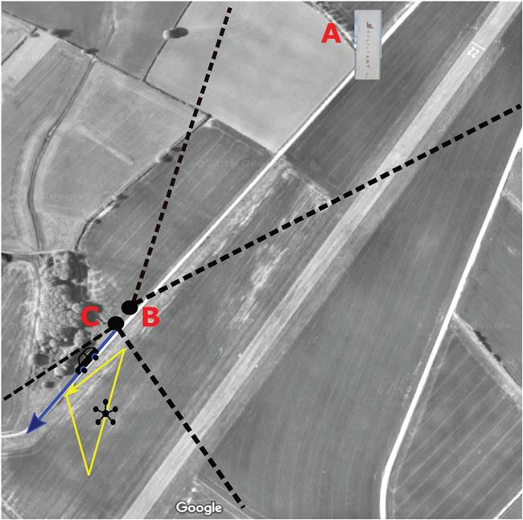
Figure 5.1 Geometrical configuration: part (A) is the Gamekeeper radar, (B) indicates the position of the reference antenna and (C) indicates the surveillance antenna. The yellow line represents the trajectory of the drone
The passive receiver used for the experiments was a National Instrument USRP-2943R, providing a 2×2 MIMO transceiver. Two of the available channels were used in the experiments to acquire the reference and surveillance signals. The received signals in the reference channel and the surveillance channel were down-converted to baseband using a common built-in receiver Local Oscillator (LO). Data was stored in a laptop for off-line processing in MATLAB®. During signal processing, the reference and surveillance channel were treated separately. The block diagram of the system is shown in Figure 5.2.
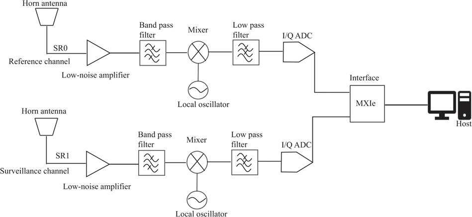
Figure 5.2 Block diagram for staring radar target detection
5.5 Detection results with reference channels
The I/Q signals from each channel were matched-filtered to form a slow-time fast-time map. The signal was received in long blocks of data and arranged in a vector form. Each pulse in the surveillance channel was cross-correlated with the corresponding pulse measured in the reference channel assuming no range ambiguities occurred given the relative short target range investigated. Finally, a Fast Fourier Transform (FFT) in the slow-time domain was calculated to produce the range–Doppler maps. In the processing, a Hamming window was used to suppress sidelobes in both range and Doppler. The range–Doppler map enables discrimination between stationary and moving returns, to separate the moving target from the stationary clutter.
5.5.1 Experimental results
This section presents the results of the experiment obtained with the use of the reference channel. The integration time was 0.1 s corresponding to integrating 734 pulses. The received signals were down-converted and sampled at 14.704 MHz by the passive receiver.
Due to the lower RCS and speed of the drone, a suitably long integration time was selected to improve the detection ability of the receiver and to increase Doppler resolution. The drone was successfully detected within the beamwidth of the surveillance antenna when the drone flew away and towards the receiver. Figure 5.3 shows the range–Doppler map for the drone flying away from the receiver and shows the peak response with a negative Doppler shift of −85.48 Hz. Figure 5.4 shows the corresponding Doppler cut at the target range. Figure 5.5 shows the range–Doppler map for the drone flying towards the receiver. The peak response can be seen with a Doppler shift of 85.48 Hz. The drone was also detected in other frames from the few passes it made within the proximity of the passive receiver and similar Doppler shifts were measured. Figure 5.6 shows the corresponding Doppler cut at the target range. Results also show a weak response at −10 dB around zero-Doppler. This is most likely coming from the relatively strong non-stationary vegetation clutter returns and due to a drop in clutter suppression gain because of the use of a longer integration time. The resulting long integration time made it more difficult to remove the clutter with a standard low-pass filter (i.e., clutter coherency was partially lost during the dwell time).
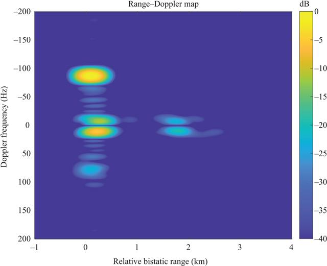
Figure 5.3 Range–Doppler map after zero-Doppler suppression for a drone flying away from the receiver with 0.1-s integration time
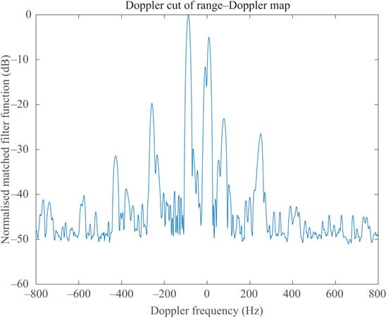
Figure 5.4 Doppler cut of the response at the target range for the drone flying away from the receiver obtained with 0.1-s integration time
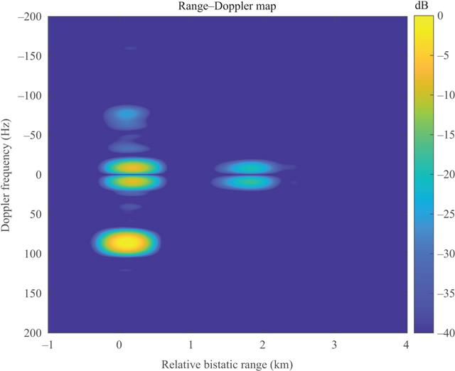
Figure 5.5 Range–Doppler map after zero-Doppler suppression for a drone flying towards the receiver with 0.1-s integration time
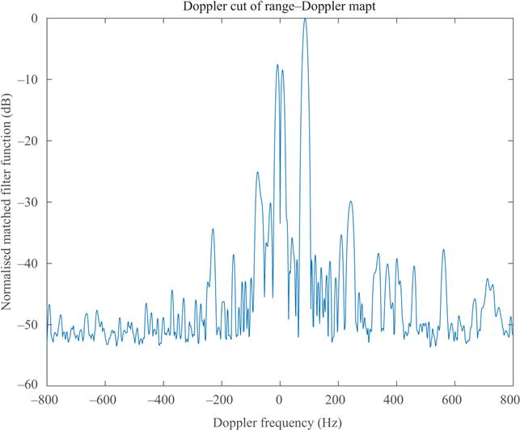
Figure 5.6 Doppler cut of the response at the target range for the drone flying towards the receiver obtained with 0.1-s integration time
The GPS truth data was recorded and this gives the Cartesian coordinates for the target as a function of time. Together, with the known coordinates of the transmitter and passive receiver, the range rate of the targets with respect to the transmitter and the passive receiver can be accurately estimated. The bistatic Doppler frequency derived from the GPS is given by the following equation:
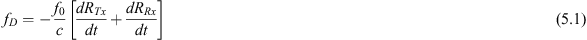
where f0 is the carrier frequency, c is the speed of light,
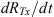
is the time derivative of the changing range between the transmitter and the targets, and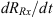
is the time derivative of the range between the drone and passive receiver. The velocity and Doppler frequency calculated from the GPS data is shown in Figure 5.7. The zero time in the GPS data plotted in these figures is with reference to the sample start time.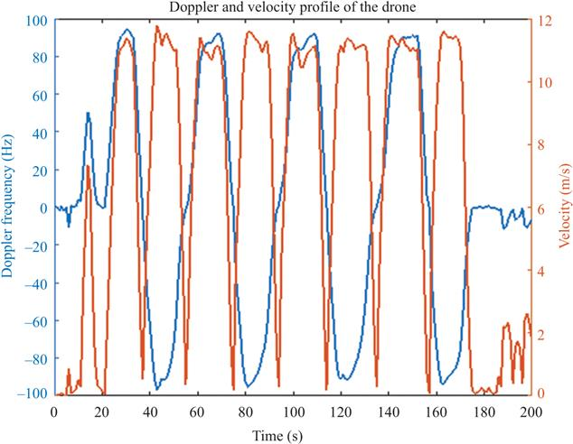
Figure 5.7 Velocity profile of the drone and relative expected Doppler shift frequency calculated with the GPS ground-truth data
The radar data could not be fully synchronised with the GPS ground truth. However, results relative to the flying drone are within the Doppler interval obtained with the GPS ground truth data. For example, Figure 5.7 shows at 48 s, the Doppler frequency is −86.2 Hz with a velocity of 11.3 m/s (25.3 mph) (the drone flying away from the surveillance antenna) and at 63 s (the drone flying towards the surveillance antenna), the Doppler frequency is 85.3 Hz with a velocity of 10.9 m/s (24.4 mph).
5.6 PBR without a reference channel
This section presents the results of passive target detection using the same experimental set-up as in Section 5.5 but obtained without the use of the reference channel. The aim of this section is to enable comparisons to be made between the solution with and without a reference channel.
The total echo signal at the surveillance channel, containing the contributions of the signal from the transmitter–target–receiver and the direct signal captured through the antenna sidelobes, was split into slow- and fast-time and placed in a matrix for matched-filter processing. This was done by reshaping the total echo signal to the length of
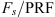
, with Fs being the sampling frequency, in every row of PRI (under the assumption of a known PRF). The matched-filter was applied, on each row of the received signal matrix, by implementing a cross-correlation with a representative software copy of a transmitted pulse. The output of the matched-filter gives a range profile map. However, in this case, the range information is only an apparent range of the target allowing the measurement of relative distances only. Nonetheless, by exploiting deterministic signals, the passive receiver becomes less computationally expensive, smaller and even lower cost at the expense of the measurement of the bistatic range. The Doppler frequency of targets was found by applying an FFT to the output of the matched-filter results to generate a range–Doppler map.Two key processing challenges had to be addressed to allow single-channel detection:
- Time misalignments between consecutive PRIs.
- Undesired Doppler frequency offsets due to independent LOs in the transmitter and receiver.
The first challenge is in the cross-correlation stage. Because is not a perfect integer, a shift in slow time (in every pulse in the data matrix) is observed. An example of a slow-time diagram before and after alignment corrections is shown in Figures 5.8 and 5.9. Because no reference channel is used, the apparent bistatic range for this case is a random value that depends only on the randomly selected starting point of a PRF. However, one could use the reflection from a reference target or the direct interfering signal from the transmitter (when available) and provide the relative bistatic range to these.
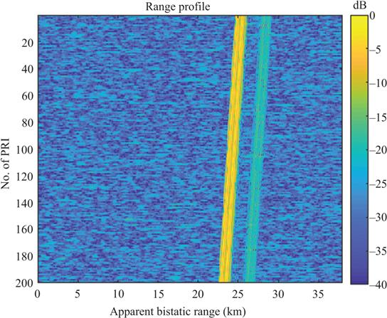
Figure 5.8 Example of a slow-time diagram before alignment corrections
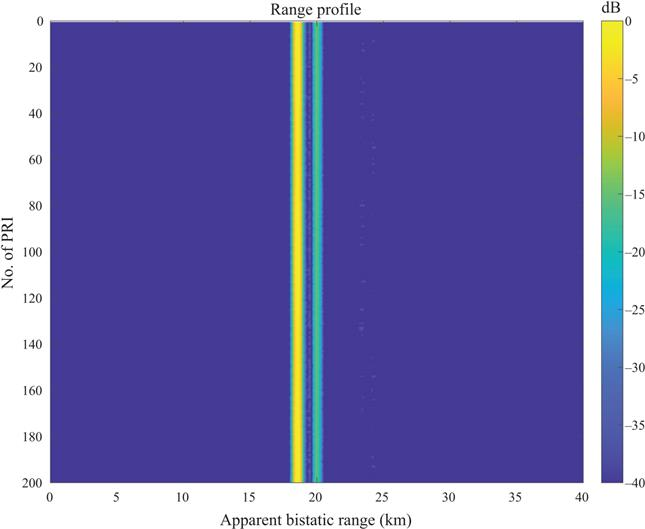
Figure 5.9 Example of a slow-time diagram after alignment corrections
Undesired and drifting Doppler shifts were observed due to the inevitable non-coherency between the receiver and transmitter LOs. This was evident by observing the direct signal from the transmitter entering through the receiving antenna sidelobes away from zero-Doppler. This undesired effect was compensated by using the peak response of the range–Doppler map which, for this short-range application, was that of the direct signal from the transmitter. After this Doppler offset compensation, zero-Doppler removal was applied to the data to mitigate stationary clutter.
Finally, a Hamming window was applied to the final processed data to reduce sidelobes.
5.6.1 Experimental results
The data used here is the same as that in Section 5.5 but the reference channel data was discarded and target echoes were processed using the algorithm presented in the previous section. Results obtained in this experiment will be compared with the results obtained with the use of the reference channel and therefore all processing parameters (i.e., FFT points, sampling frequency and integration time) are the same.
Figures 5.10 and 5.11 show the range–Doppler maps for a drone flying away and towards the receiver after alignment corrections and Doppler offset compensations. Both figures show that there is a strong response around zero Doppler, resulting from the contributions of the DSI and clutter, demonstrating satisfactory Doppler offset compensations. Figure 5.10 shows that there is a weak response at negative Doppler which is the target. A similar result was found in Figure 5.11 which shows that there is a weak response at positive Doppler. The effects of clutter and DSI are then mitigated by applying mean value removal to both results.
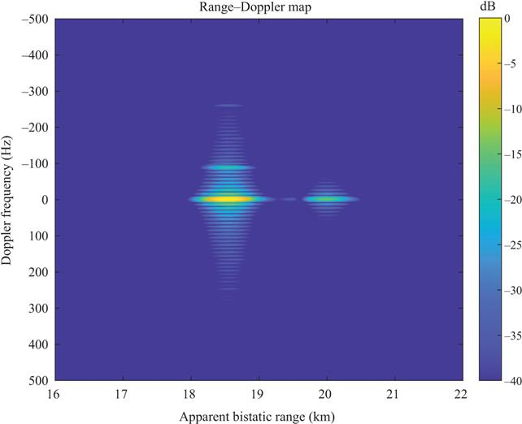
Figure 5.10 Range–Doppler map for a drone flying away from the receiver before mean value removal
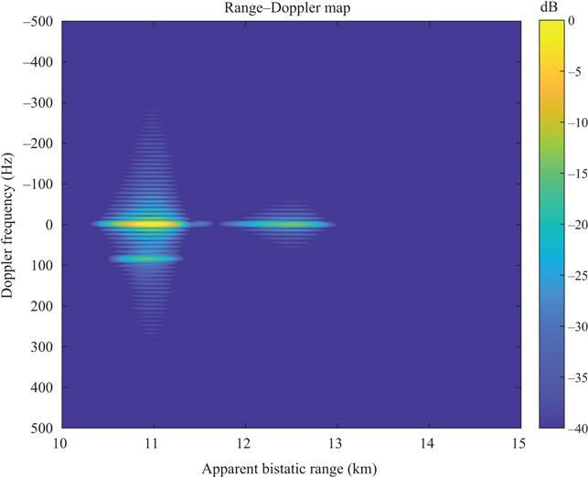
Figure 5.11 Range–Doppler map for a drone flying towards the receiver before mean value removal
Figure 5.12 shows the result for a drone flying away from the receiver. Results show a peak response at −88.24 Hz corresponding to 10.6 m/s (23.7 mph). This is also evident in the corresponding Doppler-cut in Figure 5.13. The Doppler-cut also shows a higher clutter response with respect to that obtained with the use of the reference channel with a difference between the target and the clutter of only 0.3 dB. However, from the range–Doppler map, it can be clearly seen that the target was separated in frequency from the clutter.
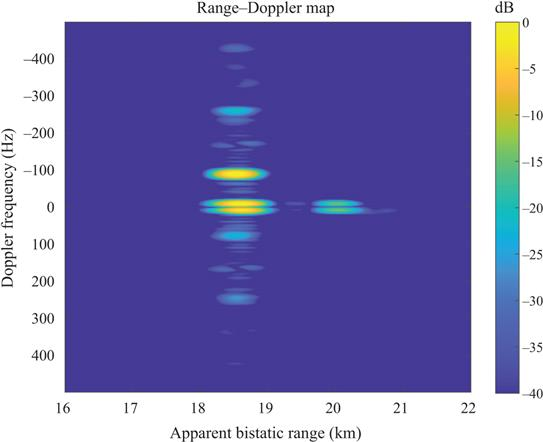
Figure 5.12 Range–Doppler map for a drone flying away from the receiver after mean value removal and windowing
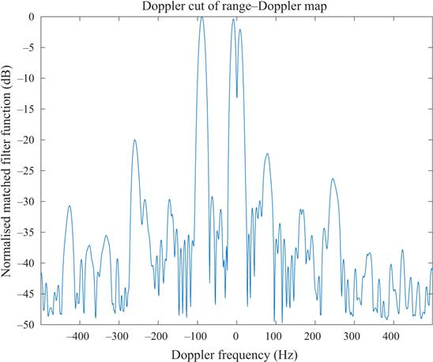
Figure 5.13 Doppler-cut for a drone flying away from the receiver after mean value removal and windowing
Figure 5.14 shows the result for the drone flying towards the receiver. Results show the peak Doppler response is at 84.56 Hz corresponding to 10.1 m/s (22.6 mph). Results are also corroborated by the Doppler-cut shown in Figure 5.15. In this case, clutter isolation comparable to that obtained with the use of the reference channel is achieved. The difference between the highest peak response and the clutter response is 8 dB.
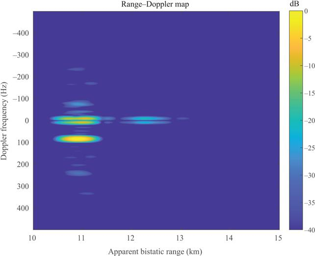
Figure 5.14 Range–Doppler map for a drone flying towards the receiver after mean value removal and windowing
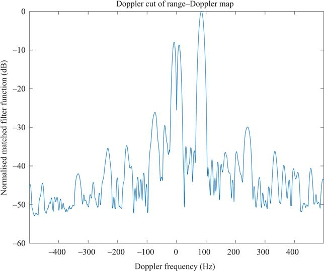
Figure 5.15 Doppler-cut for a drone flying towards the receiver after mean value removal and windowing
Measurements were taken continuously along the drone trajectory with the drone passing in front of the receiver a few times (with 0.1 s integration time). Variations in clutter between different detection snapshots might be due sudden gusts of wind that contributed to clutter non-stationarity and to antenna tripod vibrations. Higher clutter levels without the use of a reference channel might instead be due to the use of a software reference signal which clearly does not provide any live information of the non-idealities of the system which can result in self-compensation. Nevertheless, results showed that by increasing the integration time, targets could be successfully detected despite the small RCS. This was clearly possible because of the nature of the staring transmitter of opportunity which was exploited.
5.7 Comparisons
To make comparisons between the two processing solutions, Doppler frequencies obtained from the two experiments are given in Table 5.1.
Table 5.1 Peak measured Doppler frequency for the detected moving target with the reference channel and without the reference channel
| Target | Trajectory | Reference channel (Hz) | No reference channel (Hz) | Percentage of difference |
|---|---|---|---|---|
| Drone | Away from the receiver | −85.48 | −88.24 | 3.22 |
| Towards the receiver | 85.48 | 84.56 | 1.07 |
The table shows the peak Doppler for the detected target, both with and without the use of a reference channel, with a percentage difference calculated with respect to the case with the reference channel. Results show that, for these two measurements, the percentage error between two cases was less than 5%.
5.8 Conclusions
In this chapter, we have presented a review of the literature on PBRs which covered the use of commonly used communication transmitters of opportunity and the less researched use of radar transmitters of opportunity. A survey of the small amount of work reported to date on using PBR to detect drones has also been covered.
The exploitation of radar signals to achieve passive bistatic detection, with and without the use of a reference channel, was investigated using the Thales-Aveillant counter-drone Gamekeeper radar as an illuminator of opportunity. This radar was selected as a staring one that provides continuous target illumination and offers a constant signal of opportunity.
The results from an experimental trial detecting small drones using the staring radar illuminator of opportunity were presented. The results showed that a drone flying towards and away from a low-cost passive receiver could provide a magnitude response that was straightforwardly detected. The estimates of the drone velocities were in good agreement with independent air-truth GPS data. It was also shown that target detection without the use of a reference channel is feasible provided that knowledge of the signal transmit is available a priori or has been estimated. These results demonstrate that low-cost passive solutions could potentially be successfully employed as part of a more comprehensive air traffic surveillance system that is able to detect and track emerging targets such as drones in the vicinity of airports and possibly beyond with the added attraction of not posing interference risks to existing sensors.
Results presented in this chapter investigated the Doppler return from the targets. Because the results in this chapter are based on very limited experimental data of flying drone, a statistical analysis to characterise performance with Receiver Operating Characteristic (ROC) curves and Monte Carlo simulations was not possible and this represents an opportunity for future work when a larger dataset becomes available. For further work, the study can also be extended to micro-Doppler signature analysis. Data was also processed offline but the technique could be extended for real-time operation given suitable hardware and software.
References
[1] Willis NJ and Griffiths HD. Advances in Bistatic Radar. Willis NJ and Griffiths HD, editors. Raleigh: SciTech Publishing, Inc; 2007.
[2] Bayat S, Nayebi MM, and Norouzi Y. Target detection by passive coherent FM based bistatic radar. In: Proceedings of the 2008 International Conference on Radar, Radar 2008. IEEE; 2008. p. 412–415.
[3] Howland P. Editorial: Passive radar systems. IEE Proceedings – Radar, Sonar and Navigation. 2005;152(3):105.
[4] Farina A and Kuschel H. Guest editorial special issue on passive radar (Part I). IEEE Aerospace and Electronic Systems Magazine. 2012;27(10):5.
[5] Searle S, Davis L, and Palmer J. Signal processing considerations for passive radar with a single receiver. In: 2015 IEEE International Conference on Acoustics, Speech and Signal Processing (ICASSP). IEEE; 2015. p. 5560–5564.
[6] Fang G, Yi J, Wan X, et al. Experimental research of multistatic passive radar with a single antenna for drone detection. IEEE Access. 2018;6:33542–33551.
[7] Katy W. Venezuela President Maduro survives ‘drone assassination attempt’ – BBC News. Venezuela; 2018.
[8] Griffiths HD and Baker CJ. An Introduction to Passive Radar. Norwood, MA: Artech House; 2017.
[9] Baker CJ and Griffiths HD. Bistatic and multistatic radar sensors for homeland security. In: Advances in Sensing with Security Applications. Dordrecht: Kluwer Academic Publishers; 2006. p. 1–22.
[10] Griffiths HD and Long NRW. Television-based bistatic radar. IEE Proceedings F – Communications, Radar and Signal Processing. 1986;133(7):649–657.
[11] Ringer MA, Frazer GJ, and Anderson SJ. Waveform Analysis of Transmitters of Opportunity for Passive Radar. Defence Science and Technology Organisation; 1999.
[12] Howland PE. Target tracking using television-based bistatic radar. IEE Proceedings – Radar, Sonar and Navigation. 1999;146(3):166–174.
[13] Sahr JD and Lind FD. The Manastash Ridge radar: A passive bistatic radar for upper atmospheric radio science. Radio Science. 1997;32(6):2345–2358.
[14] Griffiths HD and Baker CJ. Measurement and analysis of ambiguity functions of passive radar transmissions. In: IEEE International Radar Conference, 2005. Arlington, VA: IEEE; 2005. p. 321–325.
[15] Griffiths HD and Baker CJ. Passive coherent location radar systems. Part 1: Performance prediction. IEE Proceedings – Radar, Sonar and Navigation. 2005;152(3):153.
[16] Jiabing Z, Liang T, and Yi H. A direct path interference cancellation approach to passive radar based on FM radio transmitter. In: 2006 IEEE International Conference on Electro/Information Technology. East Lansing, MI: IEEE; 2006. p. 55–59.
[17] Howland PE, Maksimiuk D, and Reitsma G. FM radio based bistatic radar. IEE Proceedings – Radar, Sonar and Navigation. 2005;152(3):107.
[18] Tasdelen AS and Koymen H. Range resolution improvement in passive coherent location radar systems using multiple FM radio channels. In: The Institution of Engineering and Technology Forum on Waveform Diversity and Design in Communications, Radar and Sonar. London, UK: Institution of Engineering and Technology; 2006. p. 23–31.
[19] Bongioanni C, Colone F, and Lombardo P. Performance analysis of a multi-frequency FM based passive bistatic radar. In: 2008 IEEE Radar Conference. Rome: IEEE; 2008. p. 1–6.
[20] Olsen KE and Woodbridge K. FM based passive bistatic radar range resolution improvement. In: 2011 12th International Radar Symposium (IRS). Leipzig: IEEE; 2011. p. 327–332.
[21] Wan L, Wang X, and Bi G. A range-Doppler-angle estimation method for passive bistatic radar. In: 2018 International Conference on Signals and Systems (ICSigSys); 2018. p. 213–218.
[22] Tan DKP, Sun H, Lu Y, et al. Passive radar using Global System for Mobile communication signal: Theory, implementation and measurements. IEE Proceedings – Radar, Sonar and Navigation. 2005;152(3):116.
[23] Kubica M, Kubica V, Neyt X, et al. Optimum target detection using illuminators of opportunity. In: 2006 IEEE Conference on Radar. Verona, NY: IEEE; 2006. p. 417–424.
[24] Chetty K, Chen Q, and Woodbridge K. Train monitoring using GSM-R based passive radar. In: 2016 IEEE Radar Conference (RadarConf). Philadelphia, PA: IEEE; 2016. p. 1–4.
[25] Gashinova M, Daniel L, Hoare E, et al. Signal characterisation and processing in the forward scatter mode of bistatic passive coherent location systems. EURASIP Journal on Advances in Signal Processing. 2013; 2013(1):36.
[26] Krysik P, Kulpa K, and Samczyński P. GSM based passive receiver using forward scatter radar geometry. In: 2013 14th International Radar Symposium (IRS). Dresden: IEEE; 2013. p. 637–642.
[27] Salah AA, Abdullah RR, Ismail A, et al. Experimental study of LTE signals as illuminators of opportunity for passive bistatic radar applications. Electronics Letters. 2014;50(7):545–547.
[28] Raja Abdullah RSA, Hashim FH, Salah AA, et al. Experimental investigation on target detection and tracking in passive radar using long-term evolution signal. IET Radar, Sonar & Navigation. 2016;10(3):577–585.
[29] Raja Abdullah RSA, Salah AA, Ismail A, et al. LTE-based passive bistatic radar system for detection of ground-moving targets. ETRI Journal. 2016;38(2):302–313.
[30] Klock C, Winkler V, and Edrich M. LTE-signal processing for passive radar air traffic surveillance. In: 2017 18th International Radar Symposium (IRS). IEEE; 2017. p. 1–9.
[31] Thomä RS, Andrich C, Galdo GD, et al. Cooperative passive coherent location: A promising service for future mobile radio networks. IEEE Communications Magazine. 2018.
[32] Gould D, Pollard R, Sarno C, et al. A multiband passive radar demonstrator. In: 2006 International Radar Symposium. Krakow: IEEE; 2006. p. 1–4.
[33] Gould D, Pollard R, Sarno C, et al. Developments to a multiband passive radar demonstrator system. In: 2007 IET International Conference on Radar Systems. Edinburgh, UK: IET; 2007. p. 1–5.
[34] Palmer J, Merrett D, Palumbo S, et al. Illuminator of opportunity bistatic radar research at DSTO. In: 2008 International Conference on Radar. IEEE; 2008. p. 701–705.
[35] Langellotti D, Colone F, Lombardo P, et al. Over the horizon maritime surveillance capability of DVB-T based passive radar. In: European Microwave Week 2014: “Connecting the Future”, EuMW 2014 – Conference Proceedings; EuRAD 2014: 11th European Radar Conference. Rome, Italy: IEEE; 2014. p. 509–512.
[36] Gao Z, Tao R, Ma Y, et al. DVB-T signal cross-ambiguity functions improvement for passive radar. 2006 CIE International Conference on Radar. Shanghai: IEEE; 2006. p. 1–4.
[37] Barcena-Humanes JL, Martin-de Nicolas J, Solis-Carpintero C, et al. DVB-T ambiguity peaks reduction in passive radar applications based on signal reconstruction. In: 2014 44th European Microwave Conference. IEEE; 2014. p. 1900–1903.
[38] Colone F, Langellotti D, and Lombardo P. DVB-T signal ambiguity function control for passive radars. IEEE Transactions on Aerospace and Electronic Systems. 2014;50(1):329–347.
[39] Guo H, Woodbridge K, and Baker CJ. Evaluation of WiFi beacon transmissions for wireless based passive radar. In: 2008 IEEE Radar Conference, RADAR 2008. 1. Rome; 2008. p. 1–6.
[40] Chetty K, Smith GE, and Woodbridge K. Through-the-wall sensing of personnel using passive bistatic WiFi radar at standoff distances. IEEE Transactions on Geoscience and Remote Sensing. 2012;50(4):1218–1226.
[41] Falcone P, Colone F, and Lombardo P. Potentialities and challenges of WiFi-based passive radar. IEEE Aerospace and Electronic Systems Magazine. 2012;27:15–26.
[42] Chen Q, Chetty K, Woodbridge K, et al. Signs of life detection using wireless passive radar. In: 2016 IEEE Radar Conference (RadarConf). IEEE; 2016. p. 1–5.
[43] Martelli T, Colone F, and Lombardo P. First experimental results for a WiFi-based passive forward scatter radar. In: 2016 IEEE Radar Conference (RadarConf). IEEE; 2016. p. 1–6.
[44] Griffiths H and Garnett A. Bistatic Radar using satellite-borne illuminators of opportunity. In: 92 International Conference on Radar. vol. 6; 1992. p. 276–279.
[45] Tsui JB and Shaw RL. Passive ranging through global positioning system. Google Patents; 1993.
[46] Koch V and Westphal R. New approach to a multistatic passive radar sensor for air/space defense. IEEE Aerospace and Electronic Systems Magazine. 1995;10(11):24–32.
[47] Antoniou M and Cherniakov M. Passive GNSS-based SAR resolution improvement using joint Galileo E5 signals. IEEE Geoscience and Remote Sensing Letters. 2015;12(8):1640–1644.
[48] Glennon EP, Dempster AG, Rizos C, et al. Feasibility of air target detection using GPS as a bistatic radar. Journal of Global Positioning Systems. 2006;5(1–2):119–126.
[49] Cherniakov M, Nezlin D, and Kubik K. Air target detection via bistatic radar based on LEOS communication signals. IEE Proceedings-Radar, Sonar and Navigation. 2002;149(1):33–38.
[50] Suberviola I, Mayordomo I, and Mendizabal J. Experimental results of air target detection with a GPS forward-scattering radar. IEEE Geoscience and Remote Sensing Letters. 2012;9(1):47–51.
[51] Edrich M, Meyer F, and Schroeder A. Design and performance evaluation of a mature FM/DAB/DVB-T multi-illuminator passive radar system. IET Radar, Sonar & Navigation. 2014;8(2013):114–122.
[52] Kuschel H, Ummenhofer M, Lombardo P, et al. Passive radar components of ARGUS 3D. IEEE Aerospace and Electronic Systems Magazine. 2014;29:15–25.
[53] Griffiths H, Baker C, and Baubert J. Bistatic radar using satellite-borne illuminators. In: RADAR 2002. Edinburgh, UK: IET; 2002. p. 1–5.
[54] Raney RK. Synthetic aperture imaging radar and moving targets. IEEE Transactions on Aerospace and Electronic Systems. 1971;(3):499–505.
[55] Whitewood AP, Muller BR, Griffiths HD, et al. Bistatic synthetic aperture radar with application to moving target detection. In: 2003 Proceedings of the International Conference on Radar (IEEE Cat. No. 03EX695). Adelaide: IEEE; 2003. p. 529–534.
[56] Whitewood AP, Baker CJ, and Griffiths HD. Bistatic radar using a spaceborne illuminator. In: 2007 IET International Conference on Radar Systems. Edinburgh, UK; 2007. p. 1–5.
[57] ESA. ESA Declares End of Mission for Envisat/Envisat/Observing the Earth/Our Activities/ESA; 2012.
[58] Samczyński P, Wilkowski M, and Kulpa K. Trial results on bistatic passive radar using non-cooperative pulse radar as illuminator of opportunity. International Journal of Electronics and Telecommunications. 2012;58(3):291–294.
[59] Ito T, Takahashi R, Morita S, et al. Experimental result of passive bistatic radar with unknown transmitting radar pulse. In: 2013 European Radar Conference. Nuremberg: IEEE; 2013. p. 455–458.
[60] Thomas JM, Baker CJ, and Griffiths HD. DRM signals for HF passive bistatic radar. In: IET International Conference on Radar Systems 2007. IEE; 2007. p. 166–166.
[61] Wan X, Zhao Z, Zhang D, et al. HF passive bistatic radar based on DRM illuminators. In: Proceedings of 2011 IEEE CIE International Conference on Radar. IEEE; 2011. p. 157–160.
[62] Zhao Z, Wan X, Zhang D, et al. An experimental study of HF passive bistatic radar via hybrid sky-surface wave mode. IEEE Transactions on Antennas and Propagation. 2013;61(1):415–424.
[63] Aldowesh A, Shoaib M, Jamil K, et al. A passive bistatic radar experiment for very low radar cross-section target detection. In: 2015 IEEE Radar Conference. IEEE; 2015. p. 406–410.
[64] Martelli T, Murgia F, Colone F, et al. Detection and 3D localization of ultralight aircrafts and drones with a WiFi-based Passive Radar. In: International Conference on Radar Systems (Radar 2017). Belfast: Institution of Engineering and Technology; 2017. p. 1–6.
[65] Chadwick AD. Micro-drone detection using software-defined 3G passive radar. In: International Conference on Radar Systems (Radar 2017). Belfast: Institution of Engineering and Technology; 2017. p. 1–6.
[66] Liu Y, Wan X, Tang H, et al. Digital television based passive bistatic radar system for drone detection. In: 2017 IEEE Radar Conference (RadarConf). IEEE; 2017. p. 1493–1497.
[67] Barott WC and Engle J. Single-antenna ATSC passive radar observations with remodulation and keystone formatting. In: 2014 IEEE Radar Conference. IEEE; 2014. p. 0159–0163.
[68] Zhang Y, Li Y, Li W, et al. Target detection with single surveillance channel for PBR. In: 2016 IEEE International Geoscience and Remote Sensing Symposium (IGARSS). IEEE; 2016. p. 6409–6412.
[69] Jahangir M and Baker CJ. CLASS U-space drone test flight results for non-cooperative surveillance using an L-band 3-D staring radar. In: 2019 20th International Radar Symposium (IRS); 2019. p. 1–11.
[70] Jahangir M, Ahmad BI, and Baker CJ. Robust drone classification using two-stage decision trees and results from SESAR SAFIR Trials. In: 2020 IEEE International Radar Conference (RADAR); 2020. p. 636–641.
1Centre for Electronic Warfare, Information and Cyber, Cranfield University, Defence Academy of the UK, Shrivenham, United Kingdom
2School of Engineering, University of Birmingham, Birmingham, United Kingdom
3Department of Information Engineering, Electronics and Telecommunications (DIET), University of Rome “La Sapienza”, Rome, Italy